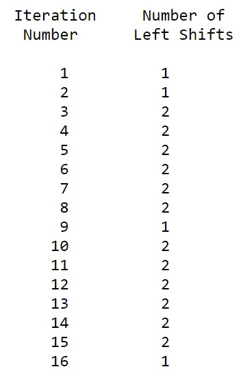

DES
Introduction
In this paper, we discuss an implementation of creating an accessible website to teach how the DES, Data Encryption Standard, algorithm works. The website it intended for anyone with an interest in cryptography or more specifically the DES encryption.
Cryptography is a very intricate subject. Learning cryptography methods can be difficult. This difficulty is inherent in the subject. The more an encryption algorithm encrypts the data the harder it is for an attacker to crack the encryption. DES, Data Encryption Standard, algorithm is no exception.
How Does DES Work? - An Overview
DES is a block cipher--meaning it operates on plaintext blocks of a given size (64-bits) and returns ciphertext blocks of the same size. Thus DES results in a permutation among the 264 possible arrangements of 64 bits, each of which may be either 0 or 1. This is the entire vision of the DES process:

The plaintext goes through a process called Initial Permutation, and after that it is splits into two 32-bits blocks, a left and a right one. Both of these parts then enter the internal processing box (sandbox), marked with an X in the figure. What happens inside the X can be divided into multiple parts:
- The iterations;
- The key-distribution box;
- The f-function;
- And the S-box.
This is the vision of the insides of the X-Box:

1. The iterations
The iterations are divided into 16 rounds, each of them have the same process, and they work consecutively; which means, the result of the first one will be used as data for the second one, and from then on, until the 15th result will be used as data for the 16th round. The result from the 16th box will be two 32-bit strings, which will be swapped and concatenated, and then go through a Final Permutation, which is the (Initial Permutation)-1. Inside this process, we see that each side of the block is a result of:
Ln = Rn-1
Rn = Ln-1 XOR f(Rn-1,Kn)
With L being the Left-Side, R being the Right-Side, f being the F-Function, and K is the Key.
2. The key-distribution box
The DES receives a key input of 64 bits, and puts that through a PC-1 table, which permutates it, and transforms it into 56 bit key.
Then, the key is split into left and right halves, each containing 28 bits. Each half goes through a left-shit, meaning that the last bit goes to the first position, and all the other take a “step” to the left, except for the one that was just moved. Each iteration follows the schedule, to know how many left-shifts it has to perform.
After both sides went through all iterations of left-shifts, they are concatenated again, and the 56-bit key goes through a second permutation table, called PC-2, like the one that follows, resulting in a 48-bit key, which will be distributed to each of the 16 rounds, and used inside the f-functions.
3. The F-Function
The F-Function is a major step inside each round of the process. This function receives the right-side block Rn-1, which is 32-bits long, and expand it to 48-bits, using the E Bit-Selection Table:
When it finishes expanding it, the string is finally able to go through a XOR operation with the key Kn, received through the key-distribution box, which also has a 48-bit length. The result of this operation will be put through a condensing permutation, that will transform it from a 48-bit length to a 32-bit length. The permutation is based on the S-Box tables, and it is applies to each group of 6-bits.
After this condensing is done, the 32-bit message will go through another permutation, this time based on the following P-Table:
This result marks the end of the f-function, and it will go through another XOR operation with the Left-Side block, as it was specified in the iterations explanation.
4. The S-Box
The S-box is nothing more than the table used as a base for the condensation of the 48-bit string into a 32-bit one. So, the box will receive the 48-bit message, divided into 6-bits blocks.
Each block will indicate the row and the column to be read on the table, and the indicated number will replace the 6-bits.
For example, the s-box receives the 6-bit block 0110002.
The first and the last bits will indicate the row to be read, so
011000, the row will be 002, which is 010.
Next, the four middle bits will indicate the column to be read:
011000, the line will be 11002, which is 1210.
So the S-Box will read the number contained into S1 (0, 12), and replace first group of bits, 011000.
In this example, S1(0, 12) = 510 = 01012. So, in the final message to be sent back to the f-function, 011000 would be replaced by 0101.
Conclusion
In conclusion, what happens in DES is basically:
The user inputs a plaintext with 64-bits length, and a key, also 64-bits length. Inside the system, the plaintext is divided into two sides (left and right), both of 32-bits length;
Before being divided, the text goes through a Initial Permutation, and after that goes inside the sandbox, where it goes through a process of encryption with the inputed key, that has also been through a process of its own;
After being put through 16 different permutation process, the left and right side of the encrypted text are reversed, concatenated and permuted again, and gets out of the sandbox, as a single string of characters, and 64-bit long.
By the end, the string is put through a Final Permutation, which is the opposite of the Initial Permutation, and the user gets the outputted cyphertext, which is 64-bit long.